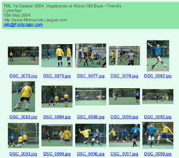

Get your own CD-ROM with photos from more than 40 matches of the 1st season of Tokyo Metropolis League
- Pictures arranged in easy to use 'web' galleries.
- Can be viewed using web browser.
See TML party photos,
CLICK HERE
- Index page ordered by date
- Match date and team names shown in index
- Thumbnail galleries of individual matches
- Suitable for use with Windows or Mac
- Total of over 350 photos!
- ONLY ¥1,500
- * This offer is only available to TML Members
- CONTACT US to order your CD-ROM while the limited stocks last.
|
|
|